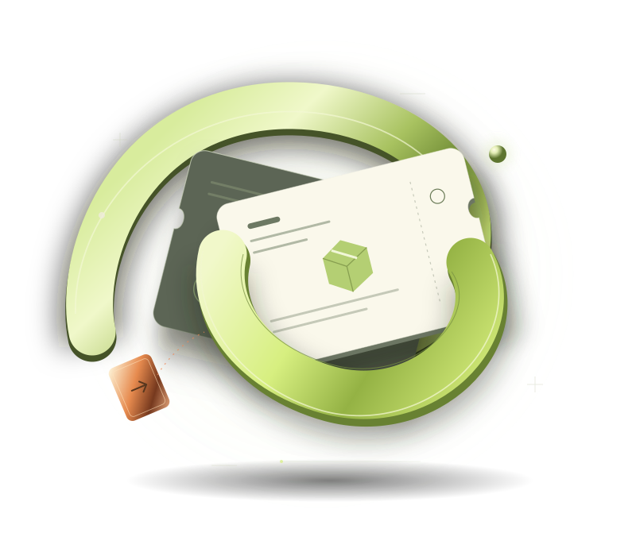
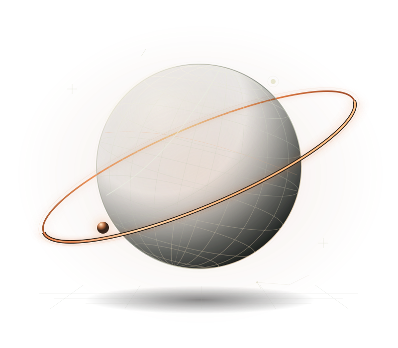

Markets & conviction.
Options trading, with QQQ as my go-to instrument. Plus a few experiments where markets meet vision and language models.
Multimodal stock tradingJust a sec...
BAT-OCHIR · FOUNDER, BUILDER & TRADER
Focused on leaving a mark
before the big event. :)
A world in motion.Selected work & ongoing curiosities
PORTFOLIO / 202601 / THE VENTURE
I’m building a way for travelers to do small sponsored tasks for businesses—and get a little more out of their trip.
Explore RoamRep
02 / THE DIGITAL ASSET
worldlayer.si
A distinctive domain I own, brought to life with an interactive globe. A small piece of the internet with room for something ambitious.
Enter worldlayer.si
AN OPEN ADDRESS.03 / THE RESEARCH EXPLORER
Discovery Galaxy
Explore scientific connections in 3D, then follow them back to the original evidence. Built for curiosity, with context kept close.
APOE · Follow a gene to its protein, related findings, and original studies.
Follow the evidence ↗04 / THE DEVELOPER TOOL
ProofPatch
A local tool that runs project checks and browser scenarios, then keeps the evidence in a readable report. For the work that comes after “it should work.”
Discover ProofPatch~ proofpatch verify
05 / OTHER ORBITS
Options trading, with QQQ as my go-to instrument. Plus a few experiments where markets meet vision and language models.
Multimodal stock tradingInstagram marketing with a 50K+ audience. Creative thinking, distribution, and selected marketing projects, including ENE.
MARKETING & GROWTH06 / THE HUMAN BEHIND THE WORLDS
I do stuff. Hopefully I’ll live in Southeast Asia one day.
Outside the screen: chess, basketball, volleyball, and hip hop choreography. A competitive streak. Four languages. Always something new to learn.
The résumé, on requestGraduated with highest honors.
DiceDecide · UNM / CNM
University app contest · 2023
.Human · University hackathon
From idea to a live demo.